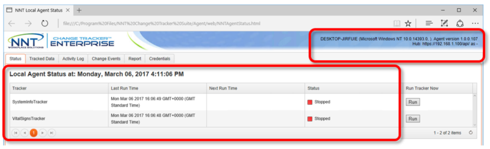
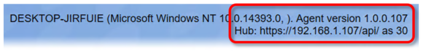
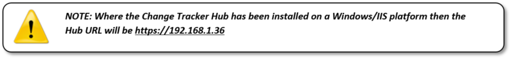
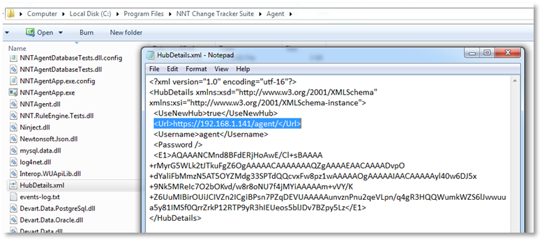

Troubleshooting Agent App Connectivity
Check Agent Operation
There is a local agent status interface which can be viewed via the local web browser. To begin with check the operation of your local Windows Agent.
N.B
On Windows, use your web browser to open
file:///C:/Program%20Files/NNT%20Change%20Tracker%20Suite/Agent/web/NNTAgentStatus.html
On Unix/Linux,
file:///opt/mono/nntagent/files/mono/web/NNTAgentStatus.html
The below shows that the agent service is running correctly but it has been unable to
register with the Change Tracker Hub.
The Agent should report the URL for the Hub
it is registered to NOTE: Where the Change Tracker Hub has been installed on a
Windows/IIS platform then the Hub URL will be
https://192.168.1.36/api
The Agent should present an Agent ID
There should always be at least two trackers
assigned to an Agent

In this instance the agent has not registered with the Hub because it does not have an
Agent ID – we want to see an Agent ID indicated as in the below:

Most common reasons for an Agent not registering are either Agent username or password
incorrect, or network connectivity.
First step is to check that there is network
connectivity to the Hub URL – enter
[https://|]>

Note that Agents will need HTTPS Port 443 access to the Change Tracker server and
you may need to configure a firewall rule for this.
Hub Details File: You can verify that the correct Hub
URL is configured for your agent by inspecting the
or /opt/nnt/agent/bin/HubDetails.xml on Solaris – the Hub URL section is highlighted.

The section following the Hub URL shows the encrypted password entry – this is normal and shows the agent initialization has operated correctly. An unencrypted password means the Agent didn't initialize and suggests a bad installation – remember the Agent on Windows requires the latest NNT Mono runtime.
Make sure this url is the one assigned to your Agents as the default location is to use localhost. Likewise the default Username is 'agent', default password for Agent registration is 'passWord121' – unless you have changed this please make sure this is configured for all agents.
If you still are experiencing issues please contact support@nntws.com